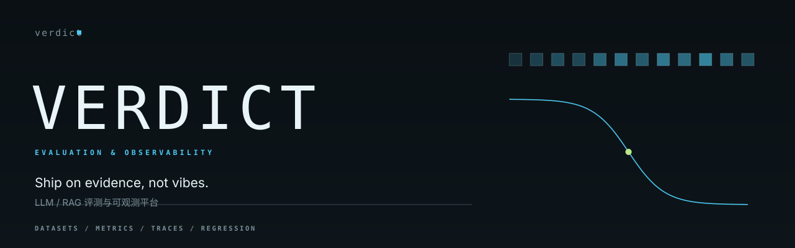

Cases with a contract
Load JSONL, validate required fields, split and sample with a seed. The same file produces the same suite every run.
datasets.py

Deterministic metrics, seeded cases, and a regression gate. Built for teams that need evidence before a prompt, chunker or reranker ships.
01 / Capabilities
Load JSONL, validate required fields, split and sample with a seed. The same file produces the same suite every run.
datasets.py
Exact match, token F1, ROUGE-L, character BLEU-4, Recall@k, MRR and nDCG@k. Pure functions, no model calls.
metrics.py
Compare a candidate against a baseline with absolute and relative tolerances, then return a pass or fail exit code.
regression.py
02 / Quickstart
Install from the repository, point at the example cases, and write a run artefact. Reports are generated from the same JSON, so CI and review never disagree.
python -m pip install -e .
$ verdict run --cases examples/cases.jsonl \
--predictions examples/predictions.jsonl
suite: cases
cases: 10
exact_match mean=0.1000 median=0.0000 p95=0.5500
token_f1 mean=0.7000 median=0.7284 p95=0.9625
rouge_l mean=0.6889 median=0.7284 p95=0.9625
wrote: artifacts/run.json
$ verdict compare --baseline baseline.json \
--candidate artifacts/run.json
## Regression gate: PASS03 / Measured throughput
Apple M5 · CPython 3.14.6 · 2,000 cases · median of five passes. Indicative, not comparative.